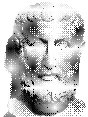

We are all much grander than ourselves.

We are all much grander than ourselves.
I'm a scholar at a esoteric university. I'm driven towards academia for its own sake. That being said, I have a passion for my world and try to spend as much time as I can outside. I'm firmly introverted and rather caught up in my studies, but I hope to be there for anybody who needs a friend.
This is a personal space for my asynchronous communication. It's sort of a blank canvas which I intend to use to write down my thoughts and to journal my life.
I believe that I can do good in this world. I hope to use what I learn to make a positive impact on the people around me, whether it's making them laugh, studying with them, or being there for them when they need it.